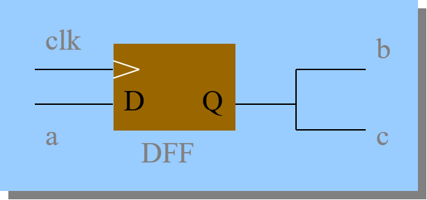
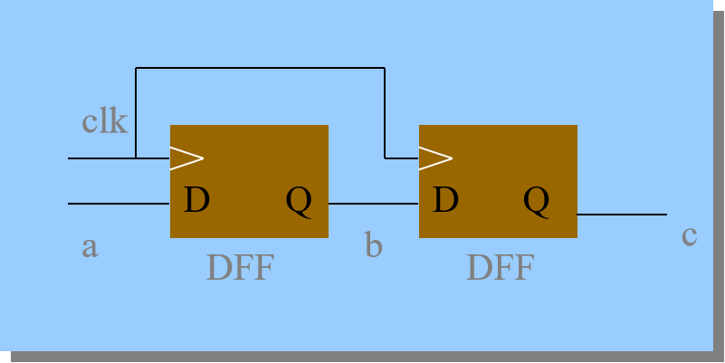

Verilog HDL语言学习
简介
随着晶体管的出现，电路的传统设计方法(例如画图、连线)已经不再适用，而Verilog HDL语言就应运而生。Verilog HDL语言是一种硬件描述语言，用于从算法级、门级到开关级的多种抽象设计层次的数字系统建模，为数字集成电路的设计带来了极大的便捷。现实生活中多用于专用集成电路（Application Specific Integrated Circuit，ASIC）和现场可编程门阵列（Field Programmabl Gate Array，FPGA）的实现。
Verilog HDL语言语法
Verilog语言基于C语言发展而来，语法宽松灵活，对初学者较为友好
逻辑值
Verilog语言中有以下几种逻辑值，与硬件中的电路信号相对应
| 逻辑值 | 含义 |
|---|---|
| 0 | 表示低电平，对应电路的GND |
| 1 | 表示高电平，对应电路的VCC |
| X | 表示未知，有可能是高电平，也有可能是低电平 |
| Z | 表示高阻态，外部没有激励信号，是一个悬空状态 |
数字格式
Verilog语言中支持二进制(b)，八进制(o)，十进制(d)和十六进制(h)，八进制不常用
二进制：4’b1010，表示4位二进制数字1010
十进制：4’d2，表示4位十进制数字2(二进制0010)
十六进制：4’hA，表示4位十六进制数字A(二进制1010)
例：16’b1001_1010_1010_1001=16’h9AA9(下划线增加可读性)
负数在位宽前面加一个负号即可，例如：-8’d5=8b’11111011，表示-5
注意：数字的位宽指的是二进制状态下的位宽，4就代表二进制状态下是4位，Verilog中默认位宽为32位，进制为二进制
标识符
Verilog语言中标识符可以由字母、数字、下划线和$组成，但是第一个字符必须是字母或者下划线，并且标识符区分大小写。推荐标识符的名称体现其含义，用下划线区别名词，例如：地址用addr表示，时钟信号用CLK表示
数据类型
寄存器数据类型(register)
特点：具有状态保持作用的电路元件，reg类型数据初值为不确定值，可通过赋值语句改变寄存器的值
1 | reg [n-1:0] 数据名1,数据名2, ……,数据名m; //表示有m条总线，每条总线位宽为n位 |
注意：reg只能在always和initial语句中被赋值
当该过程语句描述的是时序逻辑时，always带有时钟信号，则该寄存器变量对应为触发器；当该过程语句描述的是组合逻辑时，always不带有时钟信号，则该寄存器变量对应为硬件连线
线网数据类型(nets)
特点：表示结构实体之间的连线，线网类型变量不能储存值，它的值由驱动的元件决定，驱动元件有门、连续赋值语句、assign等
1 | wire [n-1:0] 数据名1，数据名2...数据名m //表示有m条总线，每条总线位宽为n位 |
注意：如果没有驱动元件连接到wire类型的变量上，则为高阻，值为Z
线网数据类型包含wire和tri类型等
参数类型(parameter)
特点：参数就是一个常量，可以一次定义多个变量，需要用逗号隔开；常用于表示状态机的状态、数据的位宽和延时大小等；模块调用时，可以通过参数传递来改变被调用模块中已定义参数
注意：每个参数定义的右边必须是一个常数表达式
运算符
位运算符(~、&、|、^)
| 运算符名称 | 运算符 | ||
|---|---|---|---|
| 按位与(a&b，a和b都是1，结果才为1，其余为0) | & | ||
| 按位或(a\ | b，a和b都是0，结果才为0，其余为1) | \ | |
| 按位取反(~a，1变成0，0变成1) | ~ | ||
| 按位异或(a^b，a和b相同，结果为0，否则为1) | ^ | ||
| 按位同或(a^~b，a和b相同，结果为1，否则为0) | ^~ |
注意：两个长度不同的操作数进行位运算时，自动在右端对齐，位数少的高位补0
算术运算符(+、－、×、/、%(求模))
移位运算符(<<、>>)
| 运算符名称 | 运算符 |
|---|---|
| 左移(将二进制数整体左移，并在最右边补0，位数增加) | << |
| 右移(将二进制数整体右移，位数不变) | >> |
关系运算符(>、<、>=、<=)
| 运算符名称 | 运算符 |
|---|---|
| 大于 | > |
| 小于 | < |
| 大于等于 | >= |
| 小于等于 | <= |
等式运算符(==,===,!=,!==)
| 运算符名称 | 运算符 |
|---|---|
| 等于(两个操作数必须逐位相等，结果才为1；若某些位为x或z，则结果为x) | == |
| 不等于 | != |
| 全等(两个操作数的相应位完全一致，则为1，否则为0) | === |
| 不全等 | !== |
逻辑运算符(!、&&、||)
| 运算符名称 | 运算符 | ||
|---|---|---|---|
| 逻辑与 | && | ||
| 逻辑或 | \ | \ | |
| 逻辑非 | ！ |
条件运算符(?:) a？b：c，如果a为真，则执行b，否则执行c
拼接运算符({}) {a,b} 将a和b拼接起来作为新信号
运算符优先级顺序如下

语句
赋值语句
连续赋值语句——assign语句
用于对wire型变量赋值，是描述组合逻辑最常用的方法之一
1 | wire [3:0] a,b,c; |
过程赋值语句——用于对reg型变量赋值
阻塞赋值方式(=)，阻塞赋值在该语句结束时就完成赋值操作
1 | always @(posedge clk) |

非阻塞赋值方式(<=)，非阻塞赋值在块结束时才完成赋值操作，因此c的值会比b的值晚一个周期
1 | always @(posedge clk) |

块语句
顺序块——begin_end语句
特点：
- 语句顺序执行
- 每条语句的延迟时间是相对于前一条语句的仿真时间而言的
- 最后一条语句执行完才跳出该顺序块
1 | begin |
并行块——fork_join语句
特点：
- 块内语句同时执行
- 块内每条语句的延迟时间是相对于程序流程控制进入到块内时的仿真时间而言的
- 延迟时间用于给赋值语句提供时序
- 当按时间排序在最后的语句执行完或一个disable语句执行时，程序流程控制跳出该并行块
1 | reg [7:0] r; |
条件语句
条件语句都是顺序语句，应该放到always块内
if-else语句
同C++中的if-else语句，当if和else数量不一致时，应当用begin_end语句单独括起来
case语句
多分支语句，敏感表达式取不同的值时执行不同语句
1 | case(敏感表达式) |
case、casex和casez语句：
- 在case语句中，分支表达式每一位的值都是确定的
- 在casez语句中，若分支表达式某些位的值为高阻值z，则不考虑对这些位的比较
- 在casex语句中，若分支表达式某些位的值为z或不定值x，则不考虑对这些位的比较
在分支表达式中，可用?来表示x或z
注意：当所有条件都不满足时，编译器会生成一个锁存器保持原值，因此if语句最后要加上else，case语句最后要加上default
循环语句
for语句
同C++中的for循环
repeat语句
连续执行一条语句n次
while语句
同C++中的while循环
forever语句
无限连续地执行语句，可用disable语句中断
结构说明语句
always块语句——不断重复执行，直到仿真结束
结构：always<时序控制><语句>
always语句可以由沿触发，也可以由电平触发
沿触发
posedge表示上升沿，negedge表示下降沿
1 | always @(posedge clk or negedge clear) |
电平触发
1 | always@ (a or b or c) |
对于可综合性问题，always语句是最有效的，如下为几种综合效果最好的模板
1 | always @(Inputs) //所有输入信号必须列出，用or隔开 |
注意：当always块中有多个敏感信号时，一定要采用if-else if语句，而不能采用多个if语句，否则可能造成一个寄存器被多个时钟驱动，引起编译错误
initial语句——只执行一次
用途：
- 用于在仿真的初始状态对各变量进行初始化
- 在测试文件中生成激励波形作为电路的仿真信号
1 | parameter size=16; |
task和function语句——可在程序模块中的一处或多处调用
task语句
当希望能够对一些信号进行一些运算并输出多个结果（即有多个输出变量）时，宜采用任务结构
1 | //任务定义 |
注1：任务的定义与调用必须在一个module模块内
注2：任务被调用时，需列出端口名列表，且必须与任务定义中的I/O变量一一对应
注3：一个任务可以调用其他任务和函数
function语句
函数适于对不同变量采取同一运算的操作，通常在本模块中调用·，也可以从其他模块调用
1 | function <返回值位宽或类型说明> 函数名； |
注1：函数的定义不能包含时间控制语句，不能调用任务
注2：定义函数时至少要有一个输入参量！且不能有任何输出或输入/输出双向变量
注3：函数的定义中必须有一条赋值语句，给函数中的一个内部寄存器赋以函数的结果值，该内部寄存器与函数同名
task与function的区别如下表所示

编译预处理语句
编译预处理属于Verilog HDL编译系统的一个部分,编译系统先对编译预处理语句进行预处理，然后将处理结果和源程序一起进行编译
注意：结尾不用带分号
`define语句(宏定义)
定义的格式为：‵define 标志符(即宏名) 字符串(即宏内容)
1 | module test; |
注意：
1.宏定义可以写在模块定义的内部或者外部，其有效范围为定义命令之后到源文件结束
2.引用宏定义符号必须加上`
3.宏名和宏定义必须在同一行中声明
4.可以引用已定义的宏名来实现层层置换
`include语句
定义的格式为`include “文件”，将另一个源文件的内容全部包含进来，与C++的include语句类似
`timescale语句
用于定义跟在该命令后模块的时间单位和时间精度，格式为：`timescale <时间单位> / <时间精度>
1 | ‵timescale 10ns / 1ns //时间单位为10ns，时间精度为1ns |
注意：
1.时间精度至少要和时间单位一样精确，时间精度值不能大于时间单位值
2.有效数字为1、10、100
3.单位为秒（s）、毫秒（ms）、微秒（us）、纳秒（ns）、皮秒（ps）、毫皮秒（fs）
Verilog程序框架
基本框架
基本单元：模块(block)，一部分描述接口，一部分描述逻辑功能
注意：以”module”开始，”endmodule”结束，每一条语句后面都有分号
程序包括四部分：端口定义、I/O说明、内部信号声明、功能定义
功能定义：
- assign语句，用来描述组合逻辑
- always语句，用来描述组合/时序逻辑
- 例化实例元件，如：and #2 u1(q,a,b)；
上述三种逻辑功能是并行的
注意：多个always块之间是并行的，单个always块中是顺序执行的
模块调用(模块的例化)
模块调用时，信号通过模块端口在模块之间传递，传递时位宽需要相同
参数传递
在模块或实例引用时，可通过参数传递改变在被引用模块或实例中已定义的参数
- 利用defparam来定义参数声明语句
格式为：defparam 例化模块名.参数名1 = 常数表达式,例化模块名.参数名2=常数表达式……;
1 | //被引用模块 |
注意：在模块的实例引用时可用“#”号后跟参数的语法来重新定义参数。
- 利用特殊符号’#’
格式为：被引用模块名 # (参数1,参数2,…)例化模块名(端口列表);
1 | //被引用模块 |
注意：利用’#’传递参数时，重新定义的参数必须和端口一一对应
不同抽象级别的Verilog HDL模型
一个复杂电路的完整Verilog HDL模型包含一系列模块，这些模块可以分别由不同抽象级别的Verilog HDL描述，主要分为以下几类：
系统级(system level): 用高级语言结构（如case语句）实现的设计模块外部性能的模型
算法级(algorithmic level): 用高级语言结构实现的设计算法模型（写出逻辑表达式）
RTL级(register transfer level): 描述数据在寄存器之间流动和如何处理这些数据的模型
门级(gate level): 描述逻辑门（如与门、非门、或门、与非门、三态门等）以及逻辑门之间连接的模型
开关级(switch level): 描述器件中三极管和储存节点及其之间连接的模型
其余的描述大多数都在上面介绍过，下面就介绍一下门级描述
门级描述
也就是直接调用门原语进行逻辑的结构描述，这是描述逻辑网络最直观的一种方式
常用门类关键词：not，and，nand，or，nor，xor，xnor，buf，bufif1，bufif0，notif1，notif0（各种三态门）
调用方法：门类型关键字 <例化的门名称> (<端口列表>)
1.端口列表中输出信号在最前面
2.门级描述不适合描述复杂的系统，一般尽量用算法级或RTL级来描述，除非是对系统速度要求比较高的场合才使用门级描述